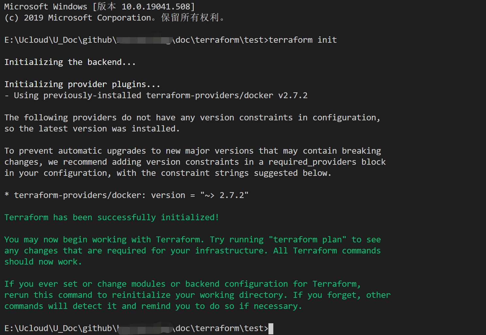
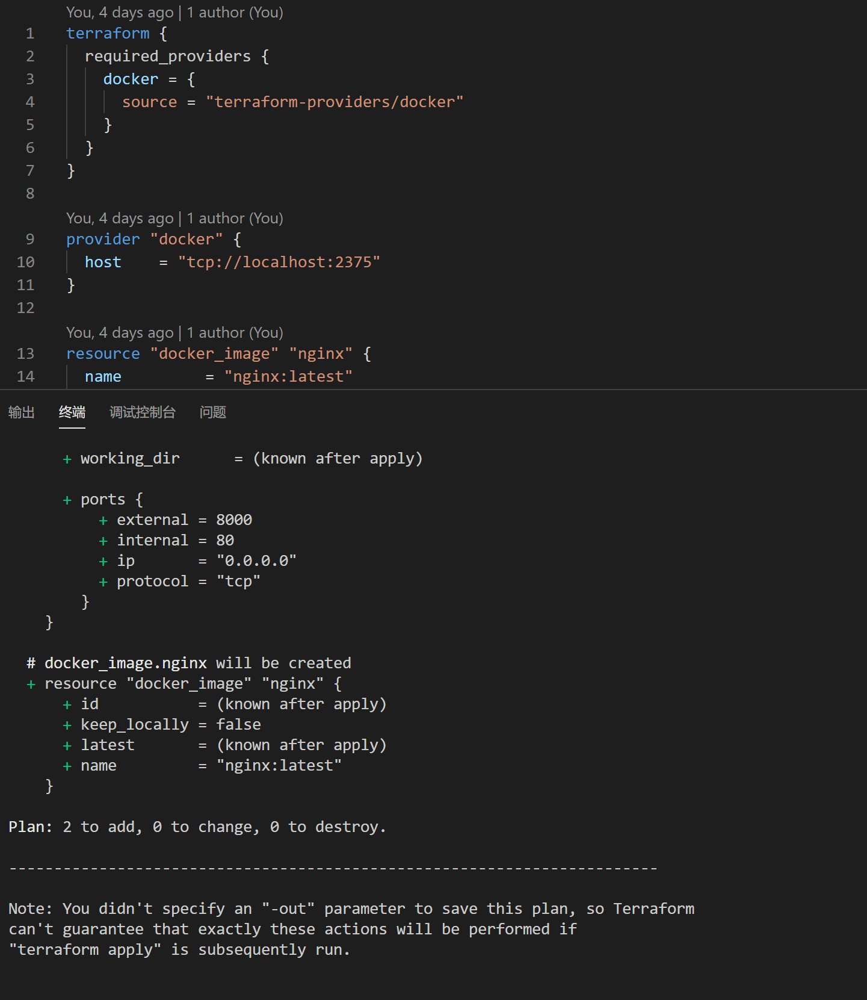

Terraform初体验（二） 第一个demo执行
通过Terraform在本地运行docker nginx
前置条件：
- 安装好windows docker
- 安装好terraform
安装docker
安装windows docker可以直接登录docker.com下载安装即可，docker可以有图形化管理页面安装最新的19.03。为了简化第一次的操作，这里我们先不通过terraform来安装docker，docker下载安装地址https://www.docker.com/get-started

编写main.tf
terraform {
required_providers {
docker = {
source = "terraform-providers/docker"
}
}
}
provider "docker" {
host = "tcp://localhost:2375"
}
resource "docker_image" "nginx" {
name = "nginx:latest"
keep_locally = false
}
resource "docker_container" "nginx" {
image = docker_image.nginx.latest
name = "tutorial"
ports {
internal = 80
external = 8000
}
}
其中值得注意的是，官方的例子，在provider "docker"中指定的host是通过windows的管道完成的，怕是已经很多人不会用了。这里需要在docker desktop中设置开启"tcp://localhost:2375"，并替换tf文件中的host ="tcp://localhost:2375"。

执行main.tf
笔者使用的vs code，可以直接右键在终端中打开，然后依次进行以下步骤。
1. 初始化
在终端中执行terraform init。首次执行初始化操作，会有较长的时间去获取terraform中定义的source信息，在第一次初始化后没有source信息的变化，可以跳过初始化直接开始部署。

2. 部署
在终端中执行terraform plan查看terraform执行计划，在终端中执行terraform apply完成部署。执行部署命令时，会将terraform的plan列出来展示给用户，并由用户确定执行。也可以输入-auto-approve跳过plan。

输入"yes"
安装完成！

查看结果。

大家可以简单的字面理解main.tf中的语义，会在后面的内容中详细介绍，在此次执行中我们会在本地创建一个nginx的容器，并暴露800端口，我们访问localhost:800可以看到由terraform创建的容器可以正常运行。
3. 删除
在终端中执行terraform destroy。则删除由tf创建的docker容器。

附录
在我们执行terraform -h后看到terraform的相关操作命令和使用方法，整理给大家，如果你刚刚开始使用terraform，可以从这些基础命令开始，对于其他命令，请使用前阅读terraform的官方文档。
Usage: terraform [-version] [-help]
Common commands:
apply 构建或更改基础设施
console terraform传参的交互式控制台
destroy 删除由terraform控制的基础设施
env 工作空间管理
fmt 将配置文件重写为规范格式
get 下载并安装配置模块
graph 创建terraform资源的可视化图形
import 将现有基础设施导入terraform
init 初始化terraform的工作目录
login 获取并保存远程主机的凭据
logout 删除远程主机的本地存储凭据
output 从状态文件读取输出
plan 生成并显示执行计划
providers 打印配置中使用的提供程序的树型结构
refresh 根据实际资源更新本地状态文件
show 检查terraform的状态或计划
taint 手动标记污点以便资源重新创建
untaint 手动取消污点
validate 验证terraform文件
version terraform版本
workspace 工作空间管理
All other commands:
0.12upgrade 重写v0.12之前的模块源代码
0.13upgrade 重写v0.13之前的模块源代码
debug debug输出管理
force-unlock 手动解除terraform锁定状态
push 推送完成代码到企业仓库
state 关键状态管理